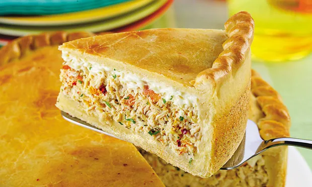

RECEITA SALGADA
Essa receita é perfeita e facil de fazer para o café da tarde
Ingredientes (10 porções)
Recheio
- 1/2 litro de água
- 4 colheres de azeite
- 1 cebola picada
- 1 xícara de milho
- copo de catupiry ou requeijão
- pimenta a gosto
- 2 tabletes de caldo de galinha
- 2 dentes de alho picado
- 3 tomates sem pele e sem semente
- 1 xícara de palmito
- sal a gosto
- 500g de peito de frango
Massa
- 500 ml de leite
- 2 ovos
- sal a gosto
- queijo ralado a gosto
- 250 ml de óleo
- 1 e 1/2 de xícara de farinha de trigo
- 1 colher (sopa) de fermento em pó
Modo de Preparo
Recheio:
O frango na água com os tabletes de caldo de galinha até ficar bem macio a ponto de desfiar, depois retire a água do frango, deixe separada para utilizar depois e desfie o frango.
Em uma panela, coloque o azeite, o alho, a cebola e os tomates picados e deixe fritar um pouco.
Adicione o frango, a água e o milho e deixe cozinhar até secar quase toda a água, deixe um pouco de água para que não fique muito seco, adicione o sal e a pimenta, quando estiver com a água quase seca acrescente o palmito.
Massa:
No liquidificador, bata o leite, óleo e ovos, depois acrescente aos poucos a farinha, fermento e o sal.
Monte a forma com óleo, despeje metade da massa, cubra a massa com todo o recheio, despeje o catupiry ou requeijão por cima espalhando-o bem, cubra o recheio com o resto da massa e finalize cobrindo com queijo ralado.
Ao forno preaquecido e deixe assar na temperatura de 180° C por mais ou menos 40 a 50 minutos ou até que esteja dourado.